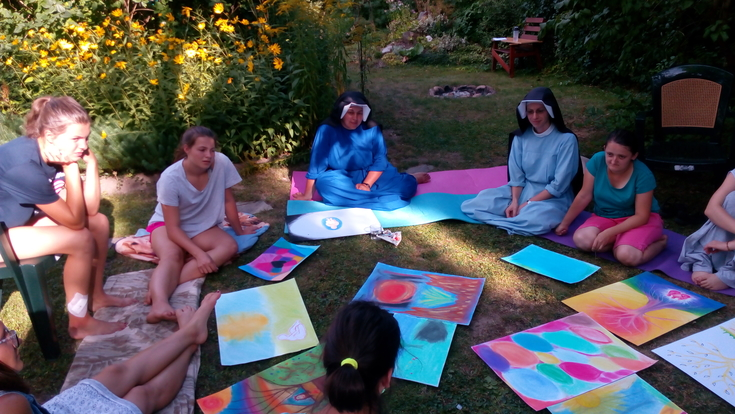
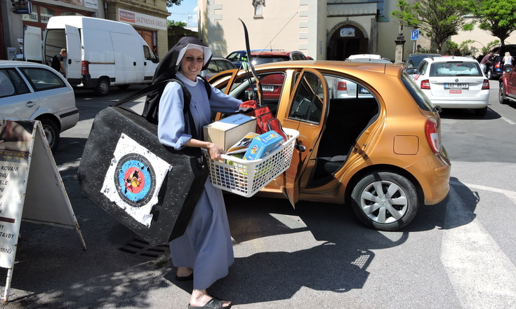

Mohla by ses krátce představit?
Je mi 39 let, narodila jsem se v Roztokách u Prahy v praktikující katolické rodině. Rodiče mě vedli zejména k hudbě (kromě mě mají doma všichni konzervatoř), přírodě a službě druhým lidem. Vystudovala jsem pedagogiku, sociální práci a psychoterapii. Jsem členkou řeholního společenství Kongregace sester Matky Božího milosrdenství a nyní žiji již 12 let v komunitě ve Dvoře Králové nad Labem.
Prozraď nám, čemu se věnuješ.
Začnu od konce: baví mě právě ta hudba – doprovázíme s naší scholou nedělní bohoslužby a je to jedna z těch činností, kdy člověk nepočítá čas a energii a je prostě sám u sebe. Ráda jsem také v tichu v přírodě, nejlépe sama. Miluju rána – začátky dne, kdy ještě většina lidí spí, a já se můžu nachystat na celý den spolu s Pánem.
Pracovně jsem zodpovědná za dva malé pracovní týmy - jeden se věnuje doprovázení osob se ztíženým přístupem k bydlení a druhý sociálně znevýhodněným dětem a mládeži z Královédvorska. Říkám jim pouličníci a mám je moc ráda už od dob studia, kdy jsem jezdívala na školy v přírodě se speciální školou. To je polovina mé služby. Druhá spočívá v psychoterapeutickém nebo duchovním doprovázení osob přicházejících do občanské poradny (spíše nevěřící lidé) a mladých osob přijíždějících do kláštera na víkendové duchovní pobyty.
To zní zajímavě. Můžeš nám říct více o tom, jak vypadá doprovázení osob se ztíženým přístupem k bydlení? Co to vlastně znamená?
Charismatem, čili posláním (a zároveň darem), naší Kongregace je šíření Milosrdenství – činem, slovem a modlitbou. Už od počátků našeho působení se sestry věnovaly osobám na okraji společnosti, konkrétně prostitutkám. V současné době se způsob pomoci mění podle místních potřeb. S touto myšlenkou jsme tedy se sestrami zareagovaly na potřeby našeho Královéhradeckého kraje a založily Dům svaté Faustyny, kde provozujeme startovací bydlení. Tyto byty využívají zejména mladé osoby přecházející z azylového do vlastního nájemního bydlení. Tento mezistupeň chyběl, a nám se podařilo zachytit tak osoby, které by jinak zůstaly na ulici. Ve chvíli, kdy vám totiž skončí lhůta pobytu v azylu, nemáte většinou ušetřeno na kauci. A to je problém. Buďto tedy máte velké štěstí na byt bez kauce nebo prostě pokračujete do dalšího azylového domu. To je ten již zmíněný ztížený přístup k bydlení.
Ve chvíli, kdy pustíte do života čerstvý vzduch Ducha svatého – dějí se zázraky – a vypadá to, že Hospodina toto otevírání oken srdce hodně baví!
Člověk má dobrou vůli, vyseká se z nejhoršího, zařídí si práci, lékařskou péči, naváže kontakt se svým dítětem, svou rodinou, nicméně všechno vyhoří na tom, že nemáte v kapse 15.000 a bydlíte v azylu. U nás se dá bydlet po dva roky za nízký nájem a bez kauce. Osoby doprovázíme sociálně (vedeme k efektivnímu hospodaření), psychologicky (podporujeme v těžké situaci, snažíme se navést tyto osoby k životní změně) a také duchovně, a to nejčastěji prostým bytím s nimi bez předsudků a hodnocení. Díky Domu svaté Faustyny se již několik dětí vrátilo z ústavní péče do péče svého rodiče, a tak to má být. Z toho máme vždycky velkou radost.
A jakým způsobem pomáháš dětem a mládeži?
S dalším týmem se věnujeme rizikovým dětem a mládeži v naší obci provozováním klubu, kam mohou dorazit všichni, kdo neví, jak smysluplně naplnit své odpoledne. Často z těchto návštěv vzniknou krásné dlouhodobé vztahy a my máme možnost doprovodit děti ulice na střední školu. Ačkoliv pak vyrostou, sdílí s námi mnohdy i své další životní putování. Tato radost je nepřenosná. Uvědomuji si to vždy, když se nás někdo zeptá na efektivitu naší práce. Mohu změřit, kolik dětí tento rok díky klubu nepropadlo, ale těžko změříme vliv, jaký má naše každodenní působení na jejich životní hodnoty.
A co druhá část Tvé služby, o které jsi hovořila? Co si můžeme představit pod pojmem občanská poradna?
V obou předchozích projektech se po několika letech praxe nacházím spíše v metodickém vedení týmů. V poradně je tomu jinak. Přichází sem lidé se svými životy. Nechávají si „nahlédnout do karet“ a jsou to přesně ti, co souhlasí se změnou v životě. Většinou proto, že je k tomu dovedou okolnosti. Jak někdo moudrý řekl – psychoterapeut má světlo a klient mapu.
Mimo klasickou poradnu k nám do kláštera mohou přijet hledající a věřící mladí lidé na duchovní doprovázení nebo jednoduše jen rozhovor o sobě a svém duchovním světě. Mohou se zapojit do života komunity nebo pobýt jen tak v tichu, o samotě. Každému prospívá něco jiného.
Úkolem mladého člověka je nalézt svou identitu, smysl života a jít za ním.Duchovní doprovázení považuji za větší dobrodružství než psychoterapii. I když – oboje konkuruje adrenalinovým sportům :-)) Ve chvíli, kdy pustíte do života čerstvý vzduch Ducha svatého – dějí se zázraky – a vypadá to, že Hospodina toto otevírání oken srdce hodně baví!
Nabízíme i delší organizované akce pro ženy a dívky, např. Klášterní dílny. Tento rok proběhnou začátkem srpna a budou se týkat tvořivého sebepoznání na základě evangelijních příběhů. Koho nebaví malování, tak ať jede raději jinam 😊

Jak vypadá Tvůj běžný pracovní den/týden?
Každý den zahajuji tichou meditací a společnou modlitbou breviáře. Vítám dny, kdy mše svatá vychází na ranní hodiny – přirozeně totiž funguji aktivněji ráno (výhoda pro řeholní život). Mohu tak být s Pánem a čerpat v ten nejpříhodnější čas. Pokud mohu, ranní modlitby si prodlužuji, protože již tuším večerní únavu a nesoustředěnost. Po společné komunitní snídani se rozcházíme každá do svého zaměstnání (charita, farnost, Dům svaté Faustyny, a další). Setkáváme se na obědě a poledním breviáři. Zážitky z celého dne sdílíme u společné večeře. Během dne si každá najde čas pro osobní modlitbu, např. růženec, duchovní četbu. Den zakončujeme adorací, nešporami, hodnocením dne a kompletářem. Každodenní hodnocení dne považuji za nezbytné pro duchovní růst. Snažím se tuto praxi předat i osobám, které doprovázím.
Můžeš se s námi podělit o to, jak ses stala řeholní sestrou? Co Tě k tomu vedlo? Myslíš, že to nějak ovlivňuje práci, kterou děláš – nebo lépe řečeno, dala by se vykonávat, kdybys nebyla sestrou? Jaký by byl podle Tebe rozdíl?
Dobrá otázka. Pán každopádně staví na naší přirozenosti. Využívá darů a talentů. Nicméně se domnívám, že zejména těch, které mu napřed jaksi darujeme. Jinými slovy – jsme v této záležitosti svobodní. Těžko budu vstupovat do kláštera se slovy (nebo skrytou motivací) „Milá sestro představená, ráda bych se odevzdala této řeholní komunitě, ale očekávám, že můj apoštolát bude vypadat asi takto: … “ Naopak, vstupem do komunity člověk odevzdává své dosavadní dovednosti, vzdělání, dary k dispozici komunitě. Zda –li budou využity už nezáleží čistě na nás.
Pán každopádně staví na naší přirozenosti. Využívá darů a talentů.Toto je těžký moment, kdy mohou útočit myšlenky (a lidi z našeho okolí) typu: k čemu ti jsou ty jazyky, k čemu jsi studovala, pracoval jsi, máš zkušenosti a podívej, co děláš teď, škoda tě, takový hezký kluk – a co z toho v semináři, apod. Myšlenka svobody od naší práce, sami od sebe, je výzvou nejen pro řeholníky, ale pro každého člověka. Mohu si totiž snadno vypěstovat závislost na své práci, ale i na svém vzhledu, partnerovi, na věcech, vzdělání. Prakticky na všem. Pokud se od myšlenky, že bez těchto věcí nemohu fungovat, oprostím, může konečně vstoupit do hry Pán. A ten dá našemu životu a apoštolátu skutečnou energii. Energii Ducha.
Takže k otázce – je možné, že bych v životě dělala něco podobného jako nyní. Hospodin naše touhy neláme, ale využívá. Řeholní sestrou jsem se stala proto, že mě tato myšlenka dlouhodobě naplňovala pocitem smyslu, radosti a pokoje.
Účastníky Absolventského Velehradu jsou mladí pracující lidé. Mnozí už našli své místo v životě, ale mnozí přemýšlejí o tom, jestli jsou skutečně tam, kde mají být a jestli něco nezměnit. Myslíš, že je možné dojít ke svému povolání – ať už řeholnímu, kněžskému nebo jakémukoliv jinému (laickému) v pozdějším věku, když člověk vykonává nějakou jinou profesi? Jak podle Tebe pozná člověk své místo?
Samozřejmě, že člověk může vnímat své povolání v pozdějším věku. Není to ale zcela obvyklé. Úkolem mladého člověka je nalézt svou identitu, smysl života a jít za ním. Pokud toto řeší člověk ve 40 letech, řekla bych, že něco v životě prokaučoval. Motivy vstupu do kláštera, semináře i manželství, jak i osobní zralost a integrita takové osoby, by mě zajímaly o mnoho více než u mladého člověka. Byla bych opatrnější.
Hledání svého místa v životě má zároveň i své místo v lidském vývoji. Podle mě se vyplatí investovat čas i energii do otázky smyslu a cíle života. A to včas. Rozhodně navrhuji vzít do hry Hospodina. Ptala bych se na jeho pohled na věc. Dále bych zkoumala své hluboké touhy a přání. Zajímavé je, jak podobné bývají touhy dítěte, jeho životní vzory v porovnání s touhami a profesí toho samého dospělého. Podobnost bývá mnohdy očividná. Často lidé, věrni svým touhám, hovoří o naplněném a šťastném životě. Dobré je mít nějakého moudrého duchovního průvodce. Dále, pokud něco potřebuji rozlišit, je třeba takového vnitřního zcitlivění na Boží hlas.
Podle mě se vyplatí investovat čas i energii do otázky smyslu a cíle života. A to včas. Rozhodně navrhuji vzít do hry Hospodina.Jak na to je těžká otázka. Mám dojem, že pomáhá prakticky cokoliv, co nás navede k sobě samému. Kdy se zklidníme a vnímáme se jaksi zevnitř. Někomu pomáhá hudba, jinému meditace, dalšímu příroda nebo četba. Asi bychom se měli zamyslet, zda mě nové rozhodnutí od Boha vzdaluje nebo k němu přibližuje. A v neposlední řadě – v jaké se nacházím životní situaci, ze které se rozhoduji. To je trochu kámen úrazu těch starších lidí. Těžko se budu rozhodovat pro misijní službu, jsem-li v současné době vychovatelem 3 malých dětí a manželka o stěhování do Afriky nechce slyšet. Tudy cesta nepovede, i když by idea byla sebesvatější.
Co je podle tebe cíl? - Cíl tvého života i tvůj momentální cíl (ve tvé službě, ve tvé činnosti)
Podle mě je to něco jako potkat se se svým životním úkolem nebo posláním. Nedá se nepovšimnout si, že některé věci nám jdou tak nějak lehčeji než jiné, jsme v nich také možná neobvykle zdatní.
Najít, pro co žít, a dělat to naplno.Jdou nám jakoby samy od sebe. Nebo nás často napadá nějaká zajímavá myšlenka něčemu věnovat naši energii. Pokud v tom vidíme zároveň i hlubší smysl, jsme podle mě na dobré cestě. Nemyslím to jako nějaké předurčení, ale spíš najít, pro co žít, a dělat to naplno.

Co pro dosažení svého cíle pravidelně děláš, jak se k němu přibližuješ?
V dlouhodobějším horizontu se snažím zjistit, co je průsečíkem nebo společným jmenovatelem všech věcí, nápadů a myšlenek, které mě baví a naplňují. Je to takové slabší místo, protože mě toho baví opravdu hodně- zejména jsou to sociální, terapeutická a duchovní témata. A v krátkodobém horizontu je to tak, že každý den se snažím odevzdat Pánu hned ráno. Vyjít s Božím Slovem a pak začíná mé velké dobrodružství – kdy se ono konkrétní Slovo stává „tělem“ – čili se většinou nějak v tom dni projeví, často skrze druhé lidi a situace. Je to takový akční dialog s Bohem. Je mi naopak líto každého dne, kdy jsem se nechala pohltit činností - na první pohled bohulibou – jak taky jinak u řeholních sester – ale nesetkala se celý den se Slovem. Prostě jsem na něj zapomněla.
Co bylo tvým cílem v minulosti a jak to vnímáš teď? Jak se to v průběhu času měnilo?
V minulosti jsem hodně řešila své profesionální kompetence (jak ten život zvládnu, jestli budu dělat to, co mě baví, a jestli to budu umět, atd.), teď řeším rozhodně více duchovní stránku všeho svého konání. Cíl, nebo ten smysl, je pro mě jako zlatá nit, kterou bych nerada přetrhla nebo ztratila z dohledu vlastní sebestředností nebo falešnou představou o své nepostradatelnosti.:-)
Co bys vzkázala účastníkům Absolventského Velehradu?
Aby byli ve svých touhách odvážní a nebáli se radikálně nasadit pro to, co považují za smysluplné.
Děkujeme moc sestře Dagmar za rozhovor!
Možné úkoly pro Tebe
- Sdílet tenhle článek.
- Buď odvážný ve svých touhách a nasaď se pro to, co považuješ za smysluplné.
- Pokud Tě zaujaly akce Klášterní dílny a chtěl/a by ses podílet na nich jako organizátor, dej vědět. Vztah k tvořivosti ve spojení s duchovním životem. Nabídni své dovednosti nebo zkušenosti ostatním.